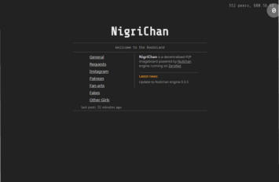
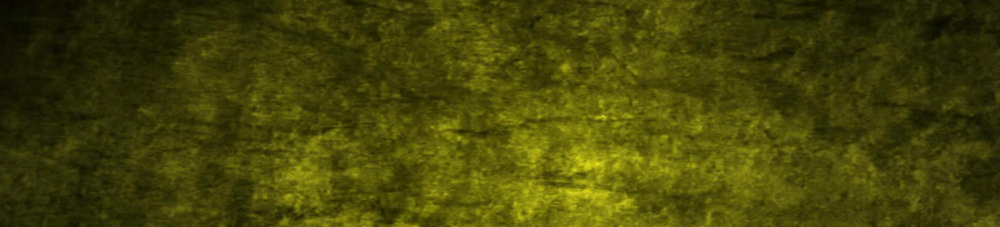
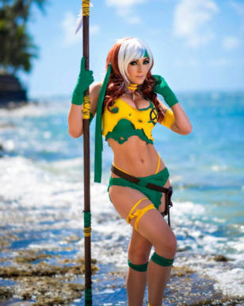
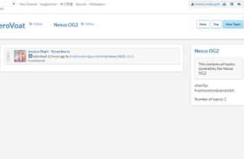

NigriChan
Both NigriChan and JessTalk have been taken down by
the owners due to ongoing struggles with the toxic part of
the community.

Jessica Nigri Reddit
Not nearly as great as the original jessicanigri2
subreddit but it remains a good source of images.
[Not a ZeroNet Link]
J3551caN1gr1 Reddit
Jessica tends to post some of her images on Twitter
when it’s released. This tends to be a decent source for
individual images.
[Not a ZeroNet Link]
Born: August 5, 1989 in Phoenix, Arizona, USA
Cosplaying Since: 2009
Biography
“In 2009, she was working at Trader Joe’s when a friend, Luke Malone, gave her
tickets to SDCC as a gift. After being told that people dress up at the event, she
made a few costumes for the convention. She created her Sexy Pikachu cosplay out
of a bright yellow mini skirt, a halter top, and a set of Pikachu ears, and a tail for
good measure. She also wore a Rikku costume from Final Fantasy X.
As Jessica described it, her first convention experience was nothing short of crazy.
She was noticed for her cosplay by multiple people during the course of the event.
One con-goer snapped a few pictures of her in her Pikachu cosplay and uploaded it
online. Those images went viral and by the time Jessica got back home from SDCC
she had thousands of friend requests on her Facebook page so she created a Fan
page after that and funneled all her fans onto there.
Despite some of the early criticisms and hate she got for her costumes, she decided
to stick with cosplay because she was having fun. In 2011, she partnered with
Microsoft and Gamestop in order to promote Gears of War 3 as Anya Stroud.
However, her video game spokesmodel career did not end there. In 2012, she won a
contest hosted by IGN and became the official spokesperson for Lollipop Chainsaw.
If you look at the character design in lollipop chainsaw and compare it to Jessica’s
portrayal of Juliet Starling, you can see she was made for the role.
As her fame in the cosplay community grew, Jessica was one of the first cosplayers
to open up a print shop, in 2010 where she would sell images of herself in Cosplay.
In addition to working on cosplay, Jessica has also been fortunate enough to voice
characters on some of her favourite animes. She was the titular character for Super
Sonico and she has voiced characters on RWBY just to name a few.
Her current boyfriend Ryan Brandt is also a cosplayer. When speaking about him
Nigri says that he is also a talented cosplayer and he understands the hectic
schedules and stress that come with the “con life.” Besides their mutual love of
cosplay one of the first things they bonded over was their shared love for
Pokemon.”~ Michael Mc Crudden
http://michaelmccrudden.com/before-they-were-famous/jessica-nigri-before-she-
was-famous/


Just a site to help out Jessica Nigri fans get some of the albums in an easily accesible way. The Nigri Archive is still the best way to
get the newest images and it may also be worth checking out her Twitter and Reddit. Hope you guys find this site useful.

About
Voat - Nexus OG2
Still running but doesn’t work, Voat is currently buggy.

Nexus Talk
Current way to join discussion on the topic of Jessica
Nigri and her content.
Jessica Nigri Nexus OG2 004